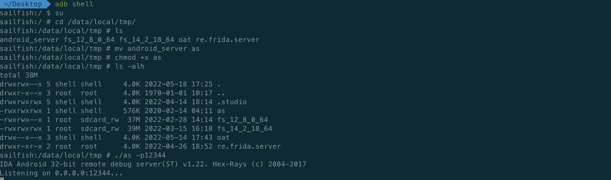
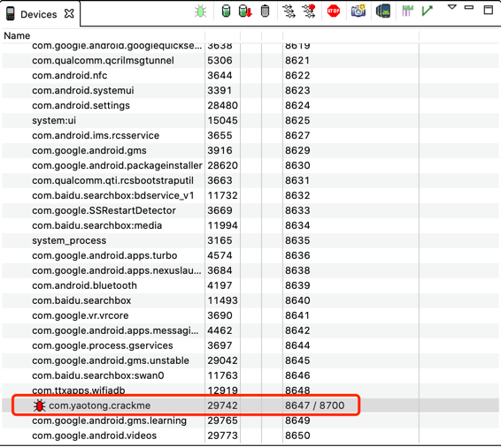
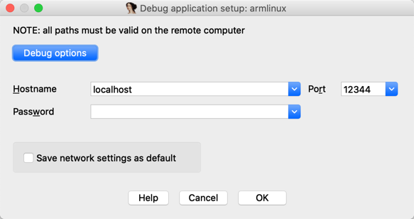

本文主要记录如何通过IDA动态调试SO层存在反调试的APK。
前言
最近在实践文章[原创]分析一个安卓简单CrackMe的过程中，当IDADebugger->attach进程后，APP就崩溃退出了。后来作者回复说是因为JNI_OnLoad中存在反调试。
自己查阅了相关资料，其中定位反调试位置主要参考[原创]Android APP漏洞之战（10）——调试与反调试详解中的so层过反调。
本机环境：MacOS Catalina、IDA Pro 7.0、pixel xl android 8.1.0
定位反调试的位置
找到应用程序
IDA Pro 7.0文件夹下ida.app->Contents->MacOS->dbgsrv->android_server，并放到桌面。备注：如果是64位APP，则为ida64.app下面的android_server。将
android_server文件放到手机路径/data/local/tmp。1
adb push android_server /data/local/tmp/android_server
重命名
android_server，添加可执行权限，并运行。
端口转发。其中12344是
android_server服务运行端口，要和上一步启动时的端口保持一致。1
adb forward tcp:12344 tcp:12344
挂起程序。
com.yaotong.crackme是应用包名。1
adb shell am start -D -n com.yaotong.crackme/.MainActivity
手机页面显示如下。
利用
Android Device Monitor查看应用挂起端口。1
2cd ~/Library/Android/sdk/tools/
./monitor
打开IDA，点击菜单栏
Debugger->attach->Remote ARMLinux/Android debugger。Hostname填写localhost代表本机，Port填写12344。
点击
Debug options，勾选Suspend on process entry point、Suspend on thread start/exit、Suspend on library load/unload三项。
选择要附加的进程名
com.yaotong.crackme